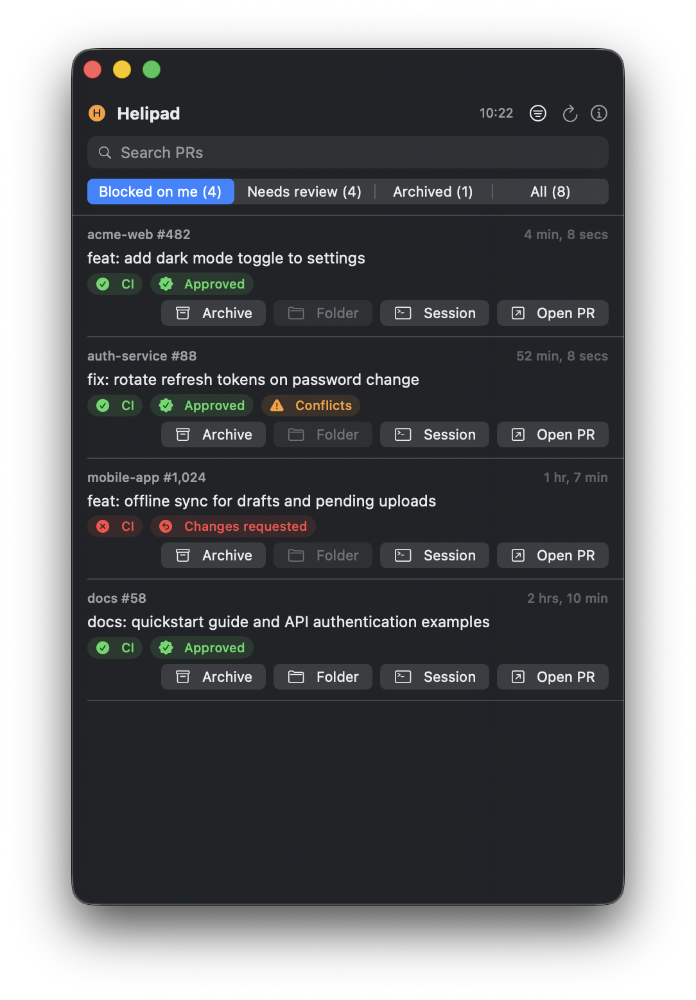

A floating macOS panel that shows which of your Claude Code PRs are blocked on you — approved and ready to merge, or sent back with changes requested — with a notification the moment a new one is.

When Claude Code agents are opening pull requests for you all day — across many repos, from many sessions — the bottleneck becomes you: the PRs that are approved and waiting for your merge, or bounced back with changes requested. Helipad keeps exactly that list — the PRs blocked on you — hovering on top of everything, and notifies you the moment a new one joins it.
Every PR shows CI state, review decision, and merge-conflict warnings — sorted by most recently updated, refreshed every 5 minutes, with more loading as you scroll.
Status filters default to PRs awaiting your action — approved and ready to merge, or sent back with changes requested. Toggle in any status you want to watch.
Searches GitHub for open PRs you authored containing the "Generated with Claude Code" attribution — no configuration, works across all your repos.
The Session button opens the Claude Code session behind a PR — attaching live with claude attach if the agent is still running, or resuming it if finished, using Claude Code's own job-to-PR links.
The moment a PR becomes blocked on you — approved, or changes requested — a macOS notification fires. Click it to open the PR. Each PR notifies exactly once; refreshes and restarts never repeat it.
A non-activating floating panel: always on top, visible on every Space, draggable anywhere, with a menu-bar toggle and no dock icon.
Archive PRs you're done with into a separate tab, open the local repo folder in Finder, or open the PR in your browser — right from each row.
Pure Swift (AppKit + SwiftUI), zero dependencies, talks to GitHub through your existing authenticated gh CLI.
⬇ Download Helipad.dmg (latest)
Open the DMG and drag Helipad into Applications. Signed and notarized — no Gatekeeper warnings. Requires macOS 13+ and an authenticated gh CLI. Or build from source:
# Requirements: macOS 13+, gh CLI authenticated (gh auth login)
git clone https://github.com/ronreiter/helipad.git
cd helipad
swift build -c release
.build/release/Helipad &
To start at login, copy .build/release/Helipad somewhere stable and add it as a
Login Item in System Settings → General → Login Items.